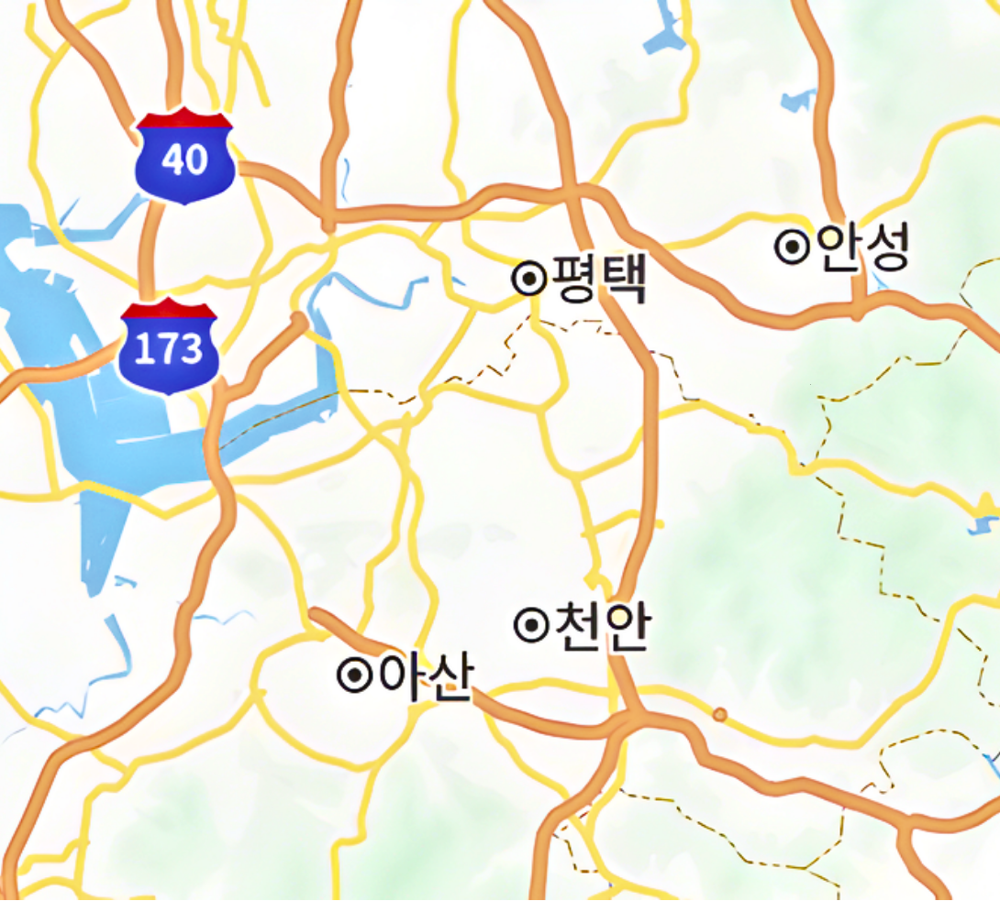
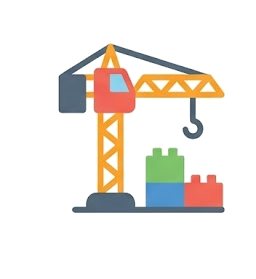
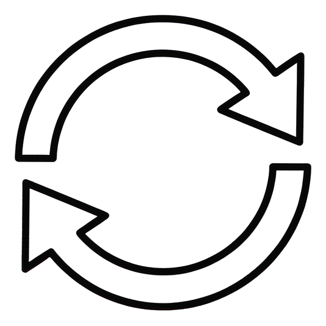

2px
360px
501px
219px
천안&아산?!
천안ㄴㄹ&아산?!
⚠️
미분양 넘쳐남
⚠️
5억주고 천안을 왜 사냐
현실은
다릅니다
성장
🏢
기업 유입
166개 기업
=
👥
인구 증가
고용 12만
천안&아산은?
천안&아산사도 됩니다
📍
아무곳?
🚫
후회
오늘 영상
1
사면 안 되는 곳
2
사야 할 곳
CHAPTER 1
사면 안되는 곳
📍
입지
지역 구조 파악
→
📋
기준
사면 안 되는 곳
→
✅
정리
핵심 요약

같이 보는이유?
구조
천안아산
천안: 서북구·동남구
아산: 모종·탕정
순위
01
서북구
02
탕정
03
동남구
04
모종
핵심
✓
비싸지 않은 시기
✓
좋은 지역 우선
기준
✅ 사도 되는 곳
핵심지?
신축?
❌ 사면 안되는 곳
외곽?
구축?
사면 안되는 아파트
3억
매수 추천 X
피할 곳
🏠
외곽 신축
풍세면 직산
🕐
구축 아파트
너무 낡음
외곽
1
입주가 정점
2
내려갈 일만
구축 vs 신축
🏗️
택지 신축
선호 높음
VS
🏠
중심지 구축
수요 적음
싸니까 괜찮지 않을까?
⚠️
싼건 이유가 있다
⚠️
지금 외곽이나 구축 매수할 이유가 없음
아닌 곳
1
쌍용
2
차암 등
우선
우선순위
1
서북구
1등 · 인프라
1등 · 인프라
2
동남구
후순위
후순위
결론
서북구
먼저 봐야 할 시기
다른 지역은?
아산은?
아산은?
정리
✓
3억 미만 금지
✓
외곽&구축 X
✓
골라서 볼 시기
주의
⚠️
외곽매수?
지금 사야 할 곳
도움이 된다면
구독과 좋아요
👍 좋아요
🔔 구독
CHAPTER 2
사야 할 곳
🥇
1순위
신불당 · 성성 · 탕정
→
🥈
2순위
불당 · 백석 · 두정
→
✅
정리
순위 총정리
📍
"
실거주 1순위
"
어디를 먼저 봐야할까?
학군
01
아름초 1위
2,278명
02
학원가
최고 수준
"10년 넘었는데?"
천안 대장
8.5억
대장가
34평 기준
성성
01
삼성 직주
호수공원
02
신축 밀집
선호 높음
성성지구
🏗️
신축 밀집
→
💰
가격 OK
성성지구
당분간 괜찮을 것

탕정
물빛도시 7억
호재
중부권 최대규모
2만+
KTX 복합환승센터
랜드마크
교통
🏗️
연결도로
→
📍
5분 거리
탕정역 주변 우선 · 인피니티 시티 · 신축급 단지
불당 vs 탕정
역할 넘겨받을 곳

2순위
1
백석
2
두정동
3
신부동
순위
✅ 1순위
신불당
성성, 탕정
❌ 2순위
불당, 백석
두정, 신부
💡
"
올바른 선택을 해야합니다
"
올바른 ≠ 쉬운
3년 뒤
3년 뒤
↓
외곽
↓
후회
핵심지
↓
웃음
최대한 사치를
부리세요
고정 댓글 확인
"지금 사도 되는 걸까?"
CHAPTER 3
사도 될까?
⚠️
리스크
삼성 · 공급 · GTX
→
💰
기회
수요 증가 · 가격 하락
→
🎯
전략
골든타임 3년
결론
✅ 기회
지금이 때
❌ 리스크
있다
리스크부터
삼성?
⚠️
삼성 빠지면 끝?
⚠️
삼성 디스플레이 공사 중단
삼성만 아님
기업
166개
투자
23조
고용
12만
착공 불명
GTX-C
착공 불명
공급 현황
최근 1년
1만
향후 예정
3만+
타이밍
📈
수요 증가
인구·일자리 증가
=
📉
가격 하락
지금이 기회
지금이
맞아떨어지는 시기
시작 가능
1억
시작 가능
무주택?
✓
살까 말까를 고민할 시기가 아닙니다
✓
무주택은 언제나 후진입니다
행동
생각 멈추기
매수
호재
⚠️
사도될까?
저도 투자했었습니다
💰
"
호재 vs 가격
"
이미 가격에 반영
골든타임
3년
골든타임
기회
🏗️
공급 많음
싸게 살 수 있음
=
📍
핵심지
최선의 선택
정리
01
외곽 피하기
3억 미만 구축
02
1순위 지역
신불당 성성 탕정
불당 백석 두정 신부
03
골든타임
3년
도움이 되셨다면
구독과 좋아요
도움이 되셨다면
구독과 좋아요
👍 좋아요
🔔 구독
도움
1
고정댓글&설명글
2
주변에 물어보세요
여러분의 선택과 도전을 응원합니다